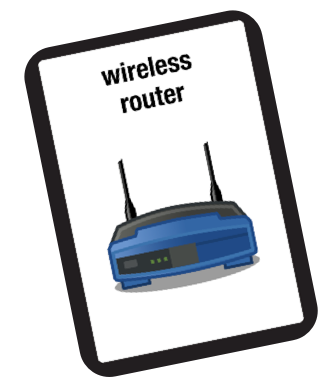

n3ws
[d0x3d!] is inspired by Forbidden Island, which was created by Matt Leacock and published by Gamewright. All rights reserved.
more ...[d0x3d!] is inspired by Forbidden Island, which was created by Matt Leacock and published by Gamewright. All rights reserved.
more ...[d0x3d!] is a collaboration between:
Zachary Peterson, Cal Poly San Luis Obispo
Mark Gondree, Sonoma State University
Kate Lockwood, CSU Monterey Bay
Joe Welch, Hartnell Community College
Partial support for [d0x3d!] was provided by the National Science Foundation [1] (Award No. 1140561 and 1140575). In addition to [d0x3d!], this award funds a larger project called TableTop Security. TableTop Security is a multi-institutional initiative that explored novel and creative ways to incorporate cybersecurity topics into existing curricul through "serious" games.
Any opinions, findings, and conclusions or recommendations expressed in this material are those of the author(s) and do not necessarily reflect the views of the National Science Foundation. ↩
Our game has been inspired and indluences by many fun games, including Steve Jackson's Hacker and Matt Leacock's Forbidden Island, published by Gamewright. We believe the latter's expressly cooperative play is integral to our social and pedagogical goals.
more ...Adam Shostack maintains a tabletop security games page, as does Board Game Geek.
[d0x3d!] on Board Game Geek
Check out photos of [d0x3d!] in action on our Flickr page
Follow us on Twitter @d0x3d
more ...We have released some curriculum modules when using [d0x3d!] in the classroom.
A paper on early experiences with [d0x3d!] appeared at CSET'13. Read a copy here.
Check out our article with Control-Alt-Hack's Tamara Denning on tabletop-gaming in security, appearing in the May-June issue of IEEE Security & Privacy.
more ...[d0x3d!] is a board game designed to introduce a diverse body of students to network security terminology, attack & defend mechanics, and basic computer security concepts.
[d0x3d!] is totally open-source, and made freely available for order, download and remixing.
more ...For games ordered or printed on or before December 29th, 2012:
Find out more about our pedagogical goals and experiences with [d0x3d!]:
[d0x3d!] is a 100% open-source game, licensed under a Creative Commons Attribution-NonCommercial-ShareAlike 3.0 Unported (CC BY-NC-SA 3.0) License.

All game materials are freely available form our GitHub repository.
We encourage remixers to share their changes on the game's Google Groups forum or tweet us pics @d0x3d.
more ...Above is a 13 minute video, designed for in-class use, which explains the rules and core mechanics of [d0x3d!], including example game play.
We have developed three curriculum modules designed for teachers using [d0x3d!] in the classroom and parents playing at home:
Our Google Groups forum is a great place for teachers and parents to share their experiences with [d0x3d!].
The mechanics of [d0x3d!] provide many other opportunities to discuss computer security issues outside of a computer science curriculum.
For example, consider the following activities:
[d0x3d!] has appeared in many places, including:
[d0x3d!] has been featured on:
[d0x3d] is a game designed for informal computer security education, reflecting the following goals:
The quickest way to get started is to watch these brief setup and gameplay videos:
Production quality versions of [d0x3d!] are available for purchase at:
[d0x3d!] comes in two editions:
Customizable [digital asset drive] mats are available here.
A PDF version of the instruction manual is available here.
All games sold through The Game Crafter are offered at the lowest, allowable price.
more ...We always welcome your feedback. In addition to our Google Groups forum, you may contact us directly at:
more ...{kind=link}